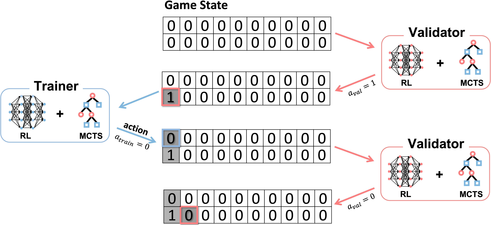
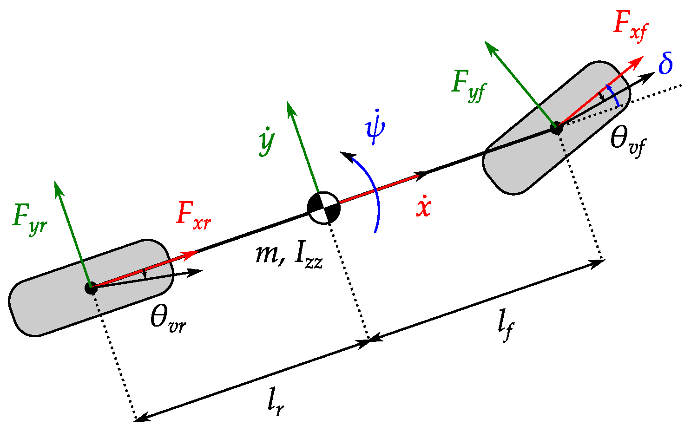
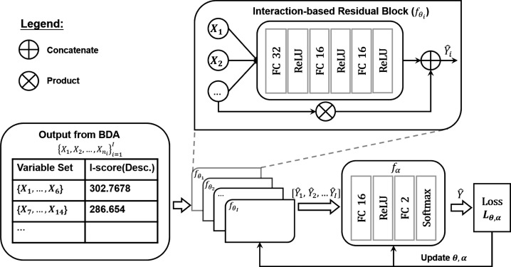
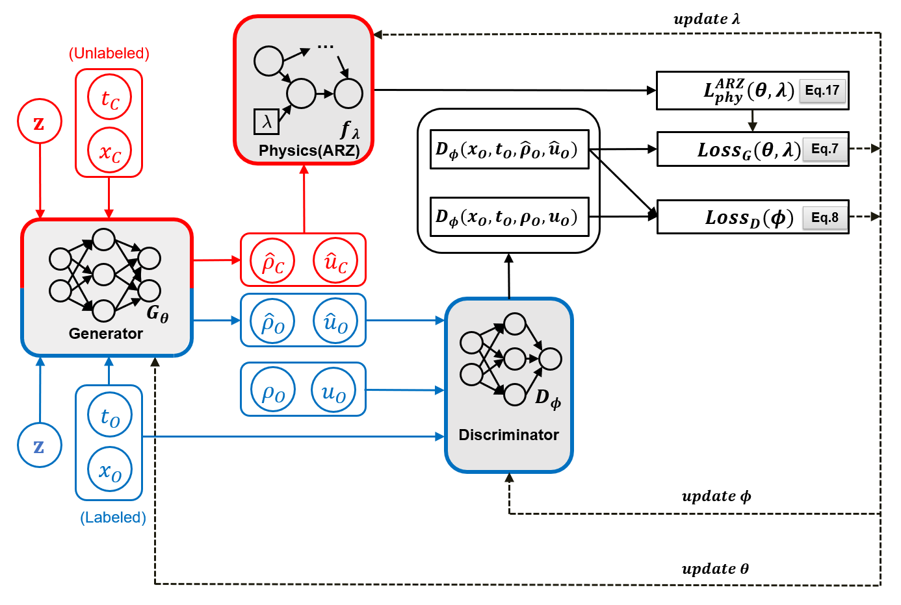
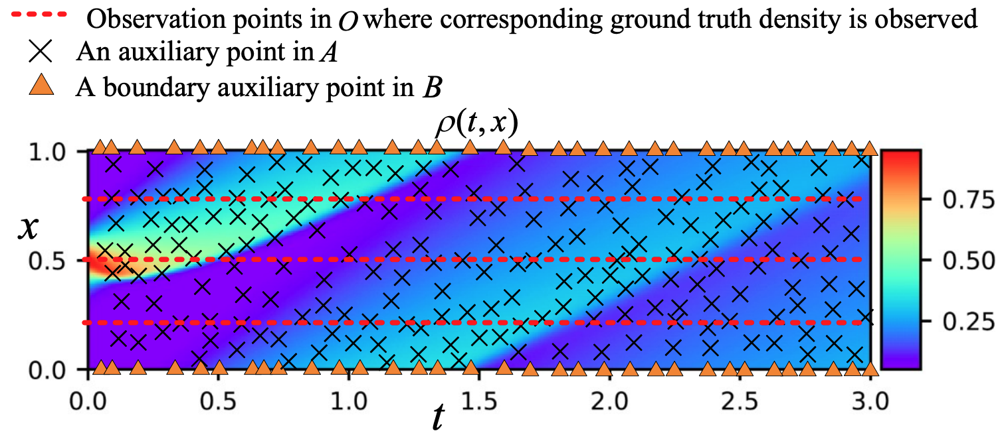
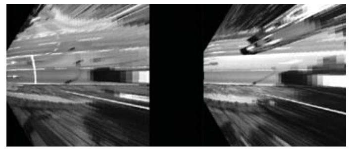

|
I am currently a final-year Ph.D. student in Civil Engineering at Columbia University advised by Prof. Xuan Di (Ditect Lab). I was recognized as a President Fellow and Mindlin Scholar at CU. Before joining CU, I received a B.E. from Tsinghua University in 2017. My research focuses on physics-informed deep learning that facilitates the integration of domain knowledge and deep learning models. I am passionate about exploring how prior knowledge can foster safe, robust, and explainable AI. I have also worked on other topics like reinforcement learning, graph neural networks, and probabilistic graphical models. Email / CV (last updated: Dec. 2024) / Google Scholar / Github |

|
News
| 2024/08 - Two papers were accepted by ITSC 2024. |
| 2024/06 - Our paper on mean-field games and traffic flow models was accepted by Transportation Science. |
| 2024/06 - Joined Argonne National Lab as a Student Researcher. |
| 2024/05 - Our paper on human mobility prediction was accepted by ACM Transactions on Spatial Algorithms and Systems |
| 2023/12 - Our paper on pedestrian trajectory prediction was accepted by AAMAS 2024 |
| 2023/06 - Our physics-informed deep learning (PIDL) survey paper was accepted by Algorithms |
| 2023/05 - Selected as Mindlin Scholar Civil in Engineering by Columbia University. |
| 2023/04 - Our paper on Longitudinal Control of Electrical Connected Vehicle got accepted to Applied Science. |
| 2023/01 - Our paper on Robust Data Sampling got accepted to Games. |
| 2022/09 - Our paper on uncertainty quantification of traffic state estimation got accepted to ECML-PKDD 2022. |
| 2022/08 - Best Paper award in KDD 2023 workshop on urban computing |
| 2022/08 - Our paper on decentralized traffic signal control got published to TRC |
| 2022/06 - Joined Siemens as a Student Researcher. |
| 2021/09 - Our paper on PIDL for traffic state estimation got published to IEEE T-ITS. |
| 2021/09 - Our paper on PIDL for imitating human driving got published to TRC |
| 2021/05 - Our paper on PIDL for traffic state estimation got published to AAAI 2021 |
Selected Publications
|  |
Games, 2023 [paper] |
|  |
Applied Sciences, 2023 [paper] |
|  |
Artificial Intelligence in Medicine, 2023 [paper] |

|
Joint European Conference on Machine Learning and Knowledge Discovery in Databases (ECML-PKDD), 2022 [paper] [code] |

|
Abridged in KDD 2022 Workshop on Urban Computing (Best Paper). [paper] |
|  |
IEEE 25th International Conference on Intelligent Transportation Systems (ITSC), 2022. [paper] |

|
Transportation research part C, 2022. [paper] |

|
Proceedings of the AAAI Conference on Artificial Intelligence (AAAI), 2021. [paper] |

|
Transportation research part C, 2021. [paper] [code] |
|  |
IEEE Transactions on Intelligent Transportation Systems, 2021. [paper] |
|  |
IEEE International Conference on Multimedia & Expo Workshops (ICMEW), 2018. [paper] |
Service
| Conference Reviewer: KDD 2022, ECML-PKDD 2021 |
| Journal Reviewer: T-ITS, TRC |
Service
| Teaching Assistant of CIEN E4011: Big Data Analytics in Transportation, Columbia University, Spring 2019-2021, Spring 2023 |
| Teaching Assistant of CEOR E4011: Civil Infrastructure Systems Optimization, Columbia University, Fall 2020, Summer 2021 |
| Teaching Assistant of CIEN E4131: Principle of Construction Techniques, Columbia University, Spring 2021 |